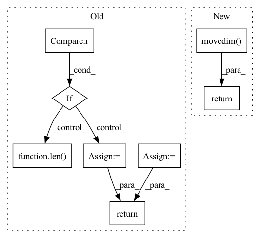

Pattern ID :6414

Before Change
if len(x.shape) == 3:
x = flow.transpose(x, 0, 2, 1)
elif len(x.shape) == 4:
x = flow.transpose(x, 0, 2, 3, 1)
elif len(x.shape) == 5:
x = flow.transpose(x, 0, 2, 3, 4, 1)
else:
raise Exception("Not support shape: {}".format(x.shape))
return x
def nhwc_to_nchw(x):
After Change
-------
channels last tensor data
return flow.movedim(x, 1, -1)
def nhwc_to_nchw(x):
Channles last to channels first
In pattern: SUPERPATTERN
Frequency: 3
Non-data size: 8
Instances
Fragment ID: 22328245
Project Name: tensorlayer/tensorlayerx
Commit Name: 958f723e252dc463b2160658c87b7469f2a85fc9
Time: 2022-10-16
Author: liuyiliang100@sina.com
File Name: tensorlayerx/backend/ops/oneflow_nn.py
M Class Name: AnonimousClass
N Class Name: AnonimousClass
M Method Name: nchw_to_nhwc(1)
N Method Name: nchw_to_nhwc(1)
M Parent Class:
N Parent Class:
M File Name: tensorlayerx/backend/ops/oneflow_nn.py
N File Name: tensorlayerx/backend/ops/oneflow_nn.py
M Start Line: 23
M End Line: 31
N Start Line: 141
N End Line: 141
'>
Before Change
// reshape the grid so that it can be used as a kernel for F.conv1d
kernel_shape = [1] * len(tensor.shape)
kernel_shape[dim] = kernel_size_int
grid = grid.view(kernel_shape)
grid = grid.detach()
padding = [0] * (2 * len(tensor.shape))
padding[dim * 2 + 1] = math.ceil((kernel_size_int - 1) / 2)
padding[dim * 2] = math.ceil((kernel_size_int - 1) / 2)
padding = tuple(reversed(padding))
if padding_mode == "replicate":
// replication padding has some strange constraints...
assert len(tensor.shape) - dim <= 2
padding = padding[:(len(tensor.shape) - 2) * 2]
tensor_ = F.pad(tensor, padding, padding_mode, padding_value)
// create gaussian kernel from grid using current sigma
kernel = torch.exp(-0.5 * (grid / sigma) ** 2)
kernel = kernel / kernel.sum()
// convolve input with gaussian kernel
return F.conv1d(tensor_, kernel)
class GaussianFilterNd(nn.Module):
After Change
source_shape = tensor.shape
tensor = torch.movedim(tensor, dim, len(source_shape)-1)
dim_last_shape = tensor.shape
assert tensor.shape[-1] == source_shape[dim]
// we need reshape instead of view for batches like B x C x H x W
tensor = tensor.reshape(-1, 1, source_shape[dim])
padding = (math.ceil((kernel_size_int - 1) / 2), math.ceil((kernel_size_int - 1) / 2))
tensor_ = F.pad(tensor, padding, padding_mode, padding_value)
// create gaussian kernel from grid using current sigma
kernel = torch.exp(-0.5 * (grid / sigma) ** 2)
kernel = kernel / kernel.sum()
// convolve input with gaussian kernel
tensor_ = F.conv1d(tensor_, kernel)
tensor_ = tensor_.view(dim_last_shape)
tensor_ = torch.movedim(tensor_, len(source_shape)-1, dim)
assert tensor_.shape == source_shape
return tensor_
class GaussianFilterNd(nn.Module):
'>
Fragment ID: 22328252
Project Name: matthias-k/deepgaze
Commit Name: a2f6037f9ae20086ff19775583ed036167449172
Time: 2022-06-20
Author: matthias.kuemmerer@bethgelab.org
File Name: deepgaze_pytorch/layers.py
M Class Name: AnonimousClass
N Class Name: AnonimousClass
M Method Name: gaussian_filter_1d(7)
N Method Name: gaussian_filter_1d(7)
M Parent Class:
N Parent Class:
M File Name: deepgaze_pytorch/layers.py
N File Name: deepgaze_pytorch/layers.py
M Start Line: 130
M End Line: 160
N Start Line: 128
N End Line: 164
'>
Before Change
if len(x.shape) == 3:
x = flow.transpose(x, 0, 2, 1)
elif len(x.shape) == 4:
x = flow.transpose(x, 0, 3, 1, 2)
elif len(x.shape) == 5:
x = flow.transpose(x, 0, 4, 1, 2, 3)
else:
raise Exception("Not support shape: {}".format(x.shape))
return x
After Change
channels first tensor data
return flow.movedim(x, -1, 1)
class ReLU(object):
def __init__(self):
'>
Fragment ID: 22328248
Project Name: tensorlayer/tensorlayerx
Commit Name: 958f723e252dc463b2160658c87b7469f2a85fc9
Time: 2022-10-16
Author: liuyiliang100@sina.com
File Name: tensorlayerx/backend/ops/oneflow_nn.py
M Class Name: AnonimousClass
N Class Name: AnonimousClass
M Method Name: nhwc_to_nchw(1)
N Method Name: nhwc_to_nchw(1)
M Parent Class:
N Parent Class:
M File Name: tensorlayerx/backend/ops/oneflow_nn.py
N File Name: tensorlayerx/backend/ops/oneflow_nn.py
M Start Line: 47
M End Line: 55
N Start Line: 157
N End Line: 157